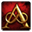
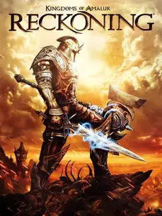

Kingdoms Of Amalur: Reckoning |
|
| Tiempo de juego | 32s |
| Última actividad | 17/11/2025 19:33:39 |
| Añadido | 17/11/2025 18:07:19 |
| Modificado | 2/12/2025 23:23:33 |
| Estado de finalización | Jugado |
| Librería | Playnite |
| Fuente | |
| Plataforma | PC (Windows) |
| Fecha de lanzamiento | 7/2/2012 |
| Puntuación de la Comunidad | 76 |
| Puntuación de la Crítica | 79 |
| Puntuación de usuario | |
| Género | Hack and slash/Beat 'em up Role-playing (RPG) |
| Desarrollador | 38 Studios Big Huge Games |
| Editor | 38 Studios Electronic Arts |
| Característica | Single Player |
| Enlaces | 🌟ReReckoning |
| Tag | |
Este juego es una leyenda, tanto por las razones correctas como por las incorrectas. Nació de un "dream team" que te caes de culo: el escritor de fantasía R. A. Salvatore creó el lore, el artista Todd McFarlane (creador de Spawn) diseñó el arte, y Ken Rolston (el capo de Morrowind y Oblivion) lideró el diseño. El resultado fue un RPG espectacular que, lamentablemente, fue el único juego que hizo su estudio antes de fundirse en un quilombo memorable. Es un "one-hit wonder" con todas las letras.
Pero lo que hizo a Amalur un juegazo de culto fue el combate. Olvidate del sistema tosco de otros RPGs de mundo abierto de la época. Esto era un hack and slash zarpado, como si mezclaras la velocidad de God of War con la magia de Fable. Cambiabas entre armas al vuelo, metías combos aéreos, esquivabas... el combate es pura adrenalina, súper fluido y visualmente espectacular.
El mundo de Amalur, con sus bosques de colores saturados y sus criaturas de diseños exagerados, tiene el sello inconfundible de Todd McFarlane. Es un mundo de fantasía vibrante y estilizado, que se siente como un cómic en movimiento. No busca el realismo, busca ser visualmente impactante, y lo logra con creces.
A nivel RPG, la idea más copada era el sistema de "Destinos". No te casabas con una clase para siempre. Podías repartir tus puntos entre Fuerza, Agilidad y Magia como quisieras, y el juego te asignaba una "carta de destino" que te daba bonus únicos. Si te cansabas de ser un guerrero, podías resetear tus puntos y convertirte en un mago o un pícaro al toque. Una flexibilidad genial.
"Kingdoms of Amalur" es la definición de una joya infravalorada. Es un RPG que prioriza la diversión y la acción por sobre todo lo demás. Su sistema de combate es uno de los más satisfactorios del género y su mundo, aunque lleno de un potencial que lamentablemente no se siguió explorando, es un placer de recorrer.